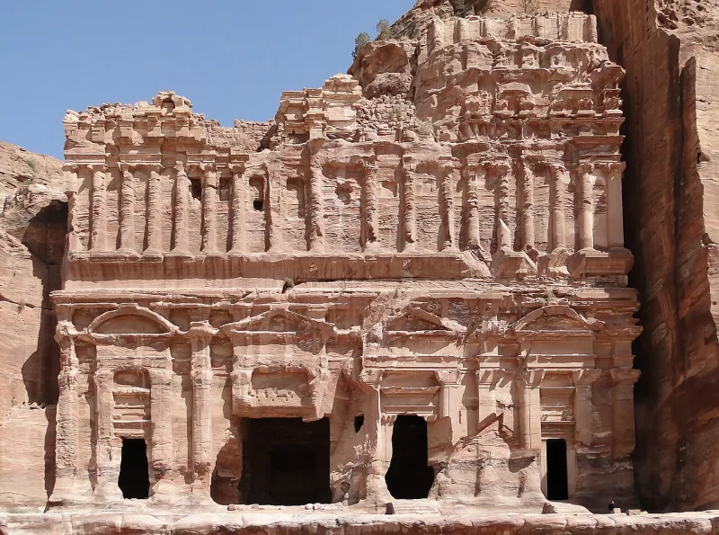
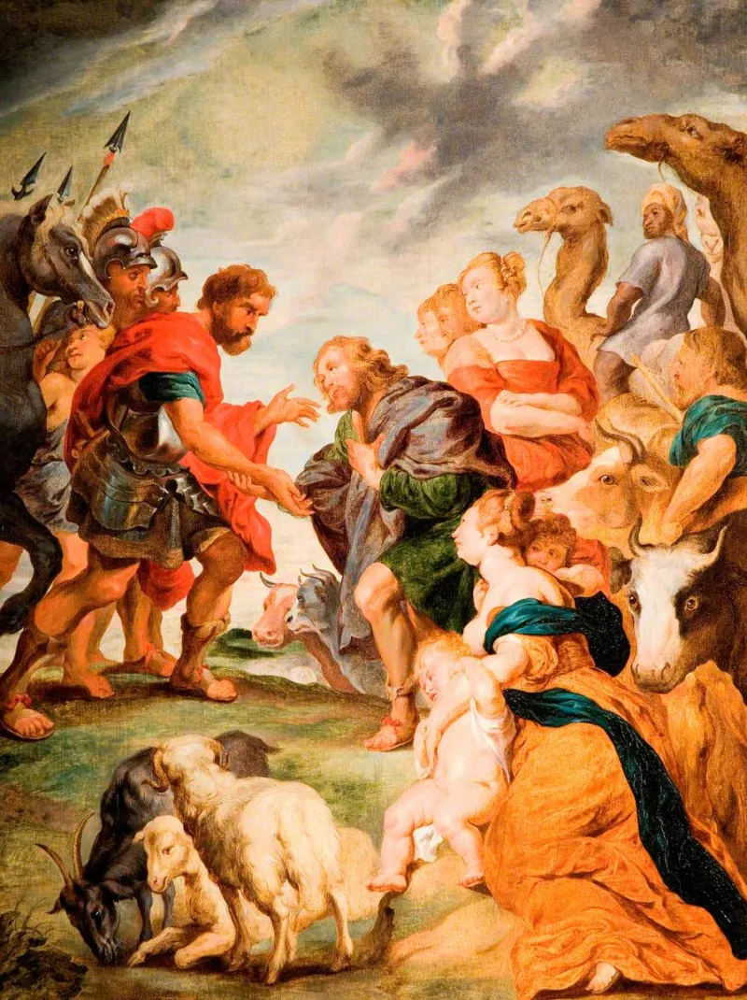

The text settles it — but concede the grievance first, or nothing will be heard.
That Esau — born "red, all over like an hairy garment" (Genesis 25:25) — was white. That Edom became Rome and then Europe.
And that white people today are Edomites under prophesied judgment, with Obadiah 1:18 and Malachi 1:2-3 read as the sentence.
The Hebrew is admoni. The same word describes David in 1 Samuel 16:12 and 17:42 — and the camps use those verses to argue David was Black.
It cannot mean Caucasian in Genesis and something else in Samuel. That contradiction is the fastest way in.
Deuteronomy 23:7 — "Thou shalt not abhor an Edomite; for he is thy brother." That is the same covenant they are quoting from, about the same people.
This one has a clear answer from the text. And the demand for justice inside the claim is worth honouring rather than mocking — God does judge oppressors, and Scripture says so without embarrassment.
You are not defending anyone's innocence. You are showing that the text they are using does not divide the world the way the teaching needs it to.
"Admoni is used of David too. How does one word mean two different races?"


Esau came out red, and Edom's hatred of Jacob runs through Rome to slavery.
Their case rests on the birth account, plus a chain of types. Esau comes out red and hairy. They read that as a new physical type appearing in a Semitic family. The name Edom means red.
Scripture then gives Edom a lasting hostility toward Jacob. They see it running through Rome, to Europe, to American slavery. They cite Obadiah, where Edom stands by on the day of Jacob's calamity and profits from it. That reads as a standing relationship, not one incident. They cite Malachi's 'Esau have I hated,' quoted by Paul in Romans 9:13. On their reading the enmity is fixed by God, not shaped by history.
The doctrine also does work they consider essential. It names the oppressor as answerable to God, and promises that the arrangement will end.
The demand for justice is right. But one Hebrew word breaks the reading.
Honour the demand inside this claim first, rather than mocking it. God does judge oppressors, and Scripture says so without embarrassment.
Then the internal contradiction is the fastest route in. Admoni describes David, in the same book the camps use to argue David was Black. The word cannot mean Caucasian in Genesis 25 and something else in 1 Samuel 16. Deuteronomy 23:7 calls the Edomite a brother. That makes no sense if Edom is a separate race under permanent curse. Edom was absorbed into Judea and vanished as a people. So if any people today descends from Edom, it is most likely Jews. That inverts the doctrine.
Romans 9:13 is about God's elective purpose between two men and two nations. Paul's own conclusion, three chapters later, is that God's mercy reaches all. Name the pastoral stakes too. This teaching has been used to justify contempt, and in some cases violence.